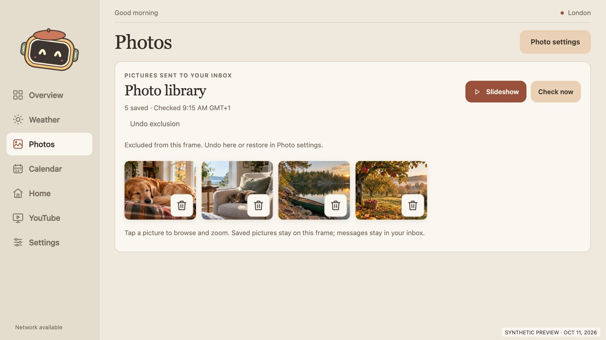

October 11, 2026 · Version 2.13.0 · code 23
Settings navigation and gallery curation
Settings now has left-side navigation inside its lightbox. Every emailed-photo thumbnail has a trash button that excludes it from the frame, with Undo and restore. Retention offers both recent-day and latest-photo choices.
Retention and curation rules
| Choice | Rule |
|---|
| Last 7, 30, 90 or 180 days | Uses the email received date, with a separate capacity of 5–50 shown photos. |
| Last 10, 20, 30, 40 or 50 photos | Newest eligible, unique, non-excluded photos regardless of age. Excluded pictures do not consume these slots. |
| Trash / exclude | Hides that file from the gallery, Overview and all slideshows. Its private ID stays excluded across Check now, pruning, expiry and restart. |
| Undo / restore | Undo restores a cached photo immediately. Local picture choices in Settings can restore one or all exclusions. If the cache copy is gone, Check now can import it again. |
| Favourites | Favourites-only slideshows and favourite preference on Overview remain available. They affect presentation, not storage retention. |
| Storage boundaries | At most 50 cached images altogether, including any excluded copies kept for Undo. Exclusion hashes are separate and bounded to 4,096. Explicit cache erase, disconnect or account change clears them. |
The default stays at 30 photos from 30 days. Checks read the inbox without changing mail, scan at most 1,000 messages and 100 image parts, apply any exact-sender rule, deduplicate the original file bytes and cache resized JPEGs without EXIF data. Changing the file bytes makes a new photo ID. A large inbox may yield fewer photos than the requested count. Lowering retention removes older cached files; expanding it requires Check now to refill.
All 33 screenshots are synthetic; physical captures stay private. Click an image for full resolution. The shared Google album continues to use Google’s player; these curation rules apply to the emailed-photo gallery.
Trash and Undo

Gallery · excluded picture and Undo · 1280×720 CSSRetention and local picture choices
Settings areas
Dark appearance
Landscape sizes and narrow fallback
Verification
54 JavaScript tests, 14 Python tests and 31 rendered browser checks passed. No runtime errors or load retries. Browser coverage includes trash/Undo, Check now, missing cache, reload and restore, retention persistence, Settings context/focus/close, nine viewport sizes and both text profiles. All 33 captures were visually reviewed.
The identity-verified USB D156 passed 14 physical checks on the final installed 2.13.0 APK: left navigation, internal swipe with fixed header, all nine retention choices through the native bridge, trash, Overview/slideshow exclusion, Undo, restore, app-restart persistence, Calendar context, Android Back and the reopened setup guide with empty credential fields. No runtime errors. Separately, 44 isolated Android checks exercised the actual PhotoStore with synthetic images, including same-file reimport rejection after expiry and pruning. Thirteen physical captures remain private.
Live Check now reported a mail error. The exclusion remained intact, but a successful real mail refresh or fresh household import was not verified. Existing weather/calendar refresh failures are also unresolved; this change does not establish live service synchronization.
Original preferences, retention, exclusions, mailbox configuration, cached pictures and calendar configuration were restored and verified. HOME and the stock launcher were preserved. Temporary WebView inspection and the task’s ADB forward were removed; the private upgrade/undo record was copied to the frame’s Downloads folder.
The normal APK uses empty household defaults and the existing signing key. v1/v2/v3 signatures verify. The installed APK matches this artifact byte for byte. Source/history/APK privacy checks and Gitleaks scans passed with zero findings.
APK SHA-256: 4bcd1521e14057a043a7e6bcfcbb5880d2c00f2973818487d2d928676faeb6c5
Earlier feature map and refinement report · Photo setup and detailed rules